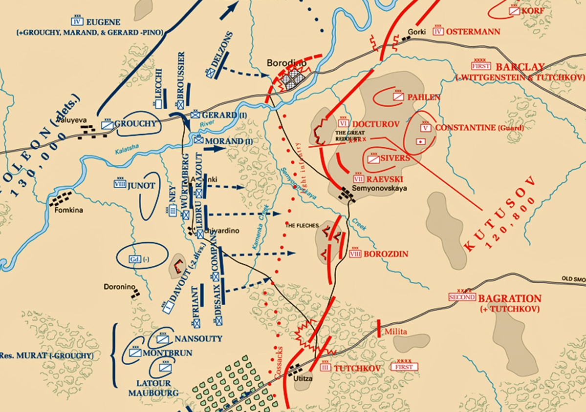
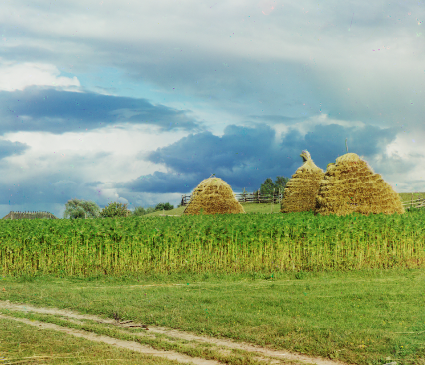
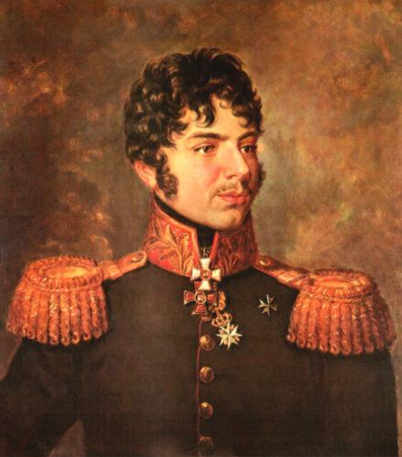
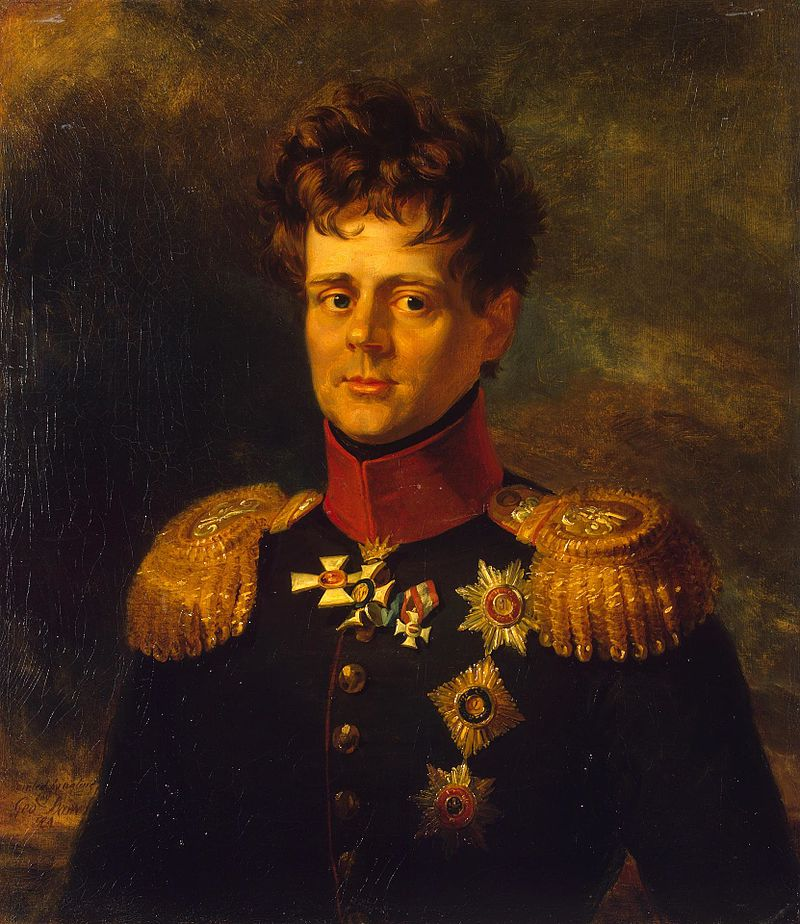

보로디노 전투 (7) - 쿠투조프의 미친 듯한 지휘
게시: 2020-09-07T06:30:28+09:00
이렇게 프랑스군이 오전 10시경에 이미 주요 전장에서 큰 승리를 거두기 일보 직전인 상황 속에서, 러시아군의 두뇌라고 할 수 있는 쿠투조프의 활약에 대해서 먼저 살펴볼 필요가 있습니다. 나폴레옹은 셰바르디노 언덕 위에 접이식 의자를 가져다 놓고 앉아 망원경으로 전황을 직접 살펴 보았다고 했지요. 그에 비해 쿠투조프는 고르키(Gorki) 마을 앞에 자리를 잡고 있었습니다. 이 곳은 쿠투조프가 나폴레옹의 주공격 방향이 될 거라고 예상한 스몰렌스크-모스크바 대로변에 위치한 곳이었는데, 주전장이 될 러시아군 좌익과는 거리도 꽤 멀었지만 무엇보다 대로변이라는 낮은 지형 특성상 쿠투조프는 여기서 아무 것도 볼 수가 없었습니다. 전날부터 프랑스군이 "우리는 러시아군의 좌익을 남쪽으로부터 공격해들어갈 거다아아아"라고 커다랗게 외치고 다녔음에도 그는 애초에 이 곳에 자리를 잡은 사령부를 옮길 생각이 조금도 없었습니다. 아마 쿠투조프라는 사람의 특성을 모르는 분들이라면 '뭔가 심오한 의도가 있기 떄문에 그랬을 것이다'라고 생각하실 수 있겠지만, 여태까지 쿠투조프의 성격에 대해 읽으신 분들은 왜 그랬는지 아실 것입니다. 그는 그냥 귀찮아서 그랬던 것입니다.

(고르키 마을은 지도 맨 위에 작은 점으로 보이는데, 전체 러시아 전선의 약간 오른쪽인 스몰렌스크-모스크바 대로에 위치한 작은 마을입니다.)

(고르키 마을의 풍경이라는데, 저기 있는 키 큰 작물은 해바라기입니다.) 좀 어이가 없을 수 있는데, 알고보면 쿠투조프의 판단이 옳았습니다. 지휘관이 그렇게 아무 것도 보이지 않는 멀리 떨어진 곳에 위치하는 것이 맞다는 이야기가 아닙니다. 쿠투조프가 전장 현황을 직접 꿰뚫어 보느냐 아니냐가 전혀 상관이 없었다는 이야기입니다. 이 날 아침부터 시시각각 조여오는 프랑스군의 집요한 공격에 대한 소식이 파발마를 통해 빗발치듯 쿠투조프에게 날아들었지만, 그가 보인 반응은 대부분 "C'est bon, faites-le!" ('좋아, 그렇게 하게'라는 프랑스어) 였습니다. 지난 편에서 바그라티온의 좌익이 집중 공격을 받자 쿠투조프는 거의 1시간에 1번 꼴로 띄엄띄엄 증원군을 보내주었다고 했지요. 그랬던 이유가 바로 이와 같은 것이었습니다. 유능한 지휘관이었다면 그 전날 프랑스군의 포진을 보고 우익의 남는 병력을 일찌감치 좌익으로 돌려 놓았을 것입니다. 가끔 가다가 전령이 뭔가 허락을 요청하는 것이 아니라 사령부의 결정을 요청할 경우에는 쿠투조프는 뒤를 돌아다보며 '카알, 자네 생각은 어떤가?' 하고 묻고는 참모 톨(Karl Wilhelm von Toll)의 대답을 그대로 전달했다고 합니다. 그런데도 러시아군 병사들과 젊은 장교들은 쿠투조프의 존재 그 자체에서 뭔가 큰 힘을 얻었다고 합니다. 15세의 소위 두셴케비치(Dushenkevich)는 그 날 아침 총사령관이 마차를 타고 그가 소속된 심비르스크(Simvirsk) 보병 연대 앞을 지나가며 "오늘 조국의 운명은 그대들의 어깨에 달렸다, 충직하게 마지막 피 한방울까지 굳건히 싸워다오!"를 외칠 때 그야말로 전율을 느꼈다고 적었습니다. 또 다른 중위 미타레프스키(Nikolai Mitarevsky)는 '쿠투조프로부터는 뭔가 힘이 뻗어나와 그 주변 사람들의 용기를 북돋우는 것 같았다' 라고 했습니다. 하지만 현장에 있던 '미움받는 독일인들' 중 하나였던 클라우제비츠(Clausewitz)는 그 날 쿠투조프의 지휘에 대해 이렇게 신랄한 기록을 남겼습니다. "그는 아무 생각도 없고 주변에서 일어나는 상황을 명확하게 파악하지도 못하는 것처럼 보였다. 활력도 없었고 독자적으로 행동하는 일도 없었다." 축구에서도 일단 경기가 시작되면 감독이 할 수 있는 일은 사실 많지 않은 것처럼, 총사령관이라는 직책은 전투 준비를 잘 하는 것일 뿐 전투가 시작되고 나서는 사실 할 일이 많지 않다고 생각할 수도 있겠습니다만, 최소한 그건 총사령관 자신이 해놓은 준비가 잘 굴러갈 때 이야기입니다. 나폴레옹이 좌익만 집요하게 때릴 것이라는 것을 뻔히 보면서도 아무런 대응 준비를 해놓지 않은 것은 정말 큰 문제였습니다. 게다가, 프랑스군 모랑 사단의 공격으로 라에프스키 보루가 함락되고 그 안의 러시아군이 다 도륙될 때, 매우 중요한 임무를 띤 장군 하나도 함께 전사해버렸는데, 쿠투조프는 그의 행방을 알지도 못했고 그가 나타나지 않는데도 그의 역할을 다른 사람에게 맡길 생각도 하지 않았습니다. 그 전사한 장군은 쿠타이소프(Alexander Ivanovich Kutaisov)였는데, 이 젊고 유능한 장군은 바로 러시아 전체 포병단의 지휘관이었습니다. 왜 전체 포병단의 지휘관이 최전선인 라에프스키 보루에 있었는가 하면, 이 용감한 젊은 장군은 여기저기에 분산된 포병 진지를 위험을 무릅쓰고 직접 방문하여 상황을 직접 살피고 있었습니다. 그가 라에프스키 보루 근처에 왔을 때, 마침 모랑 사단이 보루 안으로 침투한 상황이었고, 쿠타이소프는 인근에 있던 일단의 보병 부대를 이끌고 반격을 시도했습니다. 이 반격은 병력 부족으로 결국 실패했는데, 이때 쿠타이소프의 말만 피가 흥건한 안장을 찬 채로 되돌아왔고 쿠타이소프의 전사 소식은 그 다음 날에야 알려졌습니다. 아무리 그래도 전체 포병단 지휘관이 하루 종일 보이지 않는데 찾지도 않고 대체역을 임명하지도 않았다는 것은 쿠투조프가 얼마나 무능한 지휘관인지를 보여주는 일입니다.

(쿠타이소프 장군입니다. 그는 러시아인치고는 이름이 약간 이상한데, 그는 순수 러시아인이 아니었습니다. 그의 아버지는 예카테리나 여제 시절, 그러니까 알렉산드르의 할머니 시절에 러시아-오스만 투르크 전쟁에서 포로로 잡혀온 어린 투르크인이었습니다. 뭔가 사연이 있었겠습니다만 그 포로로 잡혀온 투르크인은 러시아 궁중에서 높은 지위까지 올라 러시아 귀족의 딸과 결혼을 했고 그래서 쿠타이소프도 일찍부터 출세가도를 달려 22살의 어린 나이에 이미 육군 중장으로 승진한 상태였습니다. 그는 아일라우 전투와 프리틀란드 전투에도 참전했었는데, 1810년에는 휴가를 내고 빈과 파리에서 어학과 수학, 포술학을 공부하는 등 머리도 매우 좋고 학문에도 관심이 많았다고 합니다. 뿐만 아니라 음악에도 뛰어나고 시도 잘 지었을 뿐만 아니라, 결정적으로 잘 생긴 외모를 가진 엄친아였습니다. 1812년 보로디노에서 전사할 때의 나이는 겨우 28세였습니다.) 원래 보로디노 전투에서 프랑스군과 러시아군의 병력 수가 어느 쪽이 더 많았느냐에 대해서는 이견이 분분하지만, 확실히 포병 전력에 있어서 만큼은 확실히 러시아군이 우월했습니다. 러시아군의 대포 수는 637문, 프랑스군은 587문이었는데다 프랑스군은 주로 작은 구경의 경포 위주였기 때문이었습니다. 그러나 약 300문의 대포는 저 후방 평지에 예비대로 묶여 있었고, 아침에 뒤늦게나마 바그라티온 철각보로 파견된 100문의 대포를 빼고도 200문의 대포가 야적장에 예비대로 얌전히 남아 있었습니다. 그런데 이걸 지휘할 쿠타이소프가 전사해버리고 후임도 지정되지 않는 바람에, 이 200문의 대포는 보로디노 전투가 완전히 끝날 때까지도 대포알 한 방 날려보지 못하고 얌전히 묶여 있어야 했습니다. 결국 보로디노 전투 내내 러시아군은 한번도 우월한 포병 전력의 덕을 보지 못하고 프랑스군의 소구경 대포의 집중 사격에 움츠러들어야 했습니다. 그나마 바그라티온의 부상 소식은 쿠투조프에게도 사태의 심각하다는 경각심을 주었습니다. 그는 즉각 새파랗게 젊은 24세의 뷔르템베르크 대공 오이겐(Herzog Friedrich Eugen Carl Paul Ludwig von Württemberg)을 보내 상황을 통제하려 했는데, 오이겐이 러시아군을 이끌고 약간 후퇴했다는 소식이 들리자 벌컥 화를 내고는 독투로프(Dokhturov)를 보내 방금 임명했던 오이겐을 대체시켜 버렸습니다. 그런데 독투로프도 현장에 도착해서는 도저히 수습이 안 된다고 판단하여 증원군을 요청하자 다시 화를 내며 그 요청을 거부했습니다. 그러더니 조금 있다가 그 요청을 수락하여 증원군을 또 보내주었습니다. 그러고는 아무래도 본인이 직접 나서서 상황을 파악해야겠다고 생각했는지 백마를 타고 전선으로 출발했습니다. 하지만 아직 충분히 변덕을 부리지 않았다고 생각했는지 가다가 아무 이유 없이 되돌아와서는 고르키 마을의 사령부를 훨씬 더 후방으로 후퇴시켰습니다.

(뷔르템베르크 대공 오이겐은 나폴레옹의 의붓아들이자 뷔르템베르크 국왕의 부마인 외젠과 헷갈리기 쉬운 이름을 가졌습니다만, 전혀 다른 인물로서 그의 고모가 러시아 짜르 파벨 1세의 황비인 마리아였습니다. 그러니까 알렉산드르와는 고종 사촌인 셈이지요. 그는 프로이센 왕국의 슐레지엔 지방에서 태어났지만 어려서부터 러시아에서 자랐습니다. 그는 '마탄의 사수'(Der Freischütz)로 유명한 작곡가 칼 마리아 폰 베버(Carl Maria von Weber)와도 친분이 깊었고 본인 스스로도 여러 곡을 작곡했습니다. 그는 1829년 아드리아노플 조약으로 러시아-투르크 전쟁이 끝나자 군에서 퇴역, 고향 프로이센으로 돌아가서 잘 살다 69세의 나이로 죽었습니다.) 다시 말씀드리지만 이때가 오전 10시를 막 넘은 시점이었고 프랑스군이 좌익과 중앙에서 압승을 거두기 일보직전인 상황이었습니다. 쿠투조프의 이런 미친 듯한 지휘 속에서 과연 러시아군은 이대로 망할 운명이었을까요 ? Source : 1812 Napoleon's Fatal March on Moscow by Adam Zamoyski
en.wikipedia.org/wiki/Estimates_of_opposing_forces_in_the_Battle_of_Borodino
en.wikipedia.org/wiki/Bagration_fl%C3%A8ches
rusgenerals.oooprog.ru/index.php?id=kutaisov
https://en.wikipedia.org/wiki/Duke_Eugen_of_W%C3%BCrttemberg_(1788%E2%80%931857)